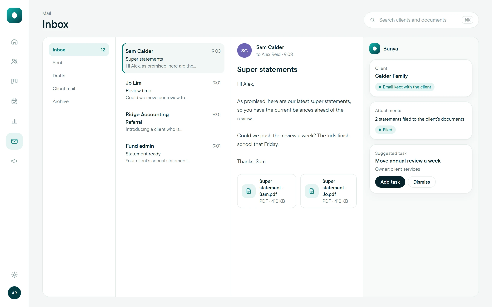
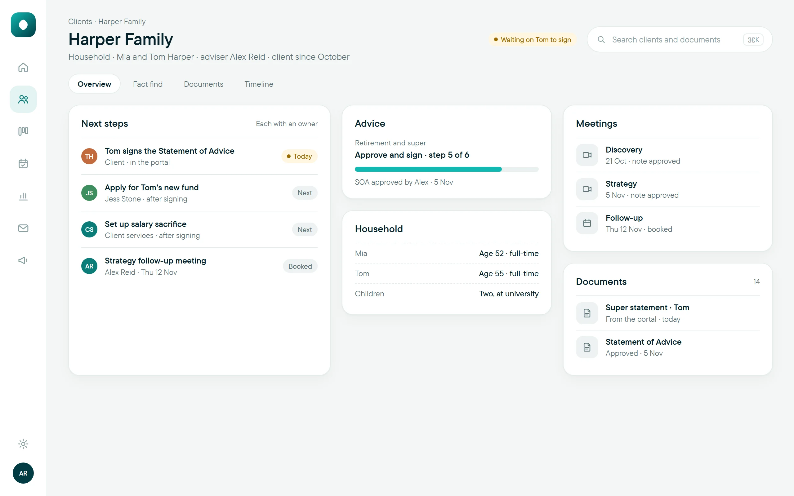

Microsoft 365 CRM for financial advisers: three ways to keep client records inside Microsoft
If your firm already lives in Outlook and Teams, keeping the client record there too makes sense. There are three ways to do it.

What are the options for a Microsoft 365 CRM for financial advisers?
A Microsoft 365 CRM for financial advisers takes one of three forms: Dynamics 365 configured by a Microsoft partner, a system your firm builds on Power Apps and Dataverse, or a ready-made advice system that runs on the same platform in your tenancy. All three store records in Dataverse; they differ in who designs and maintains the advice workflow.
- All three options keep records in Microsoft’s Dataverse. The real differences are who designs the advice workflow and who keeps it running.
- Microsoft licences are per person and billed by Microsoft. Count them in every option.
- Ask who administers the environment, and what stays with your firm if you stop paying a partner or vendor.
Why do advice firms want their CRM inside Microsoft 365?
Count the windows open on an adviser’s screen at 10am. Outlook, with the client’s email. Teams, where the meeting just ended. SharePoint, holding the signed documents. And a separate system holding the client record, where someone will later copy in the email, the meeting summary and a link to the documents.
Most Australian advice firms already pay for Microsoft 365, and their client conversations already happen there. Bringing the client record into the same environment cuts the copying, puts the firm’s data under its own administration, and lets one set of security settings cover the lot.
The question isn’t whether it can be done. It’s which of three routes suits your firm, and what each one asks of you.
What is Dataverse, and why does it matter here?
Dataverse is Microsoft’s platform for storing business data in tables, with role-based security that controls who can see what. Microsoft’s own documentation says Dynamics 365 applications, such as Dynamics 365 Sales and Customer Service, use Dataverse to store and secure their data. Power Apps model-driven apps can only be built on Dataverse.
That matters because it means all three options below can sit on the same foundation, inside your firm’s Microsoft tenancy. What changes is what’s built on top of it, by whom, and who looks after it once it’s live.
Option 1: Dynamics 365, configured by a partner
Dynamics 365 is Microsoft’s own CRM family. A Microsoft partner configures it for your firm: client records, households, pipelines and reports, and then the advice-specific parts.
- Good at: a mature, well-supported CRM with deep sales, service and reporting features, and a large pool of partners who know it.
- Watch for: Dynamics 365 is built for sales and service in any industry. The advice workflow (fact find, statements of advice, reviews, fee consent) has to be designed by your partner, and its quality depends on how well they know advice.
- Ongoing: per-person Dynamics licences, plus the partner’s time for every change and upgrade after go-live.
Option 2: build your own on Power Apps and Dataverse
Some firms build their own system with Power Apps, either with a capable person in-house or a contractor. Microsoft describes model-driven apps as buildable with little or no code once the data model is in place.
- Good at: total control. It works exactly the way your firm does, and nothing is built that you didn’t ask for.
- Watch for: you own every fix, every change and every Microsoft update. Designing the data model for households, trusts, SMSFs, fee arrangements and approvals is the hard part, and it often lives in one person’s head.
- Ongoing: Power Apps licences per person, plus the time of whoever maintains it.
Build vs buy software for advice firms covers how to weigh that trade-off in detail.
Option 3: a ready-made advice system on the same platform
A third route is a system designed for advice firms that runs on Power Apps and Dataverse in your own tenancy. The advice workflow comes already designed, and it’s set up around your stages, roles and templates.
- Good at: advice-specific work from the start, with your data still in your firm’s own Microsoft 365.
- Watch for: how much you can change yourself, who maintains it, what the vendor’s subscription covers, and what stays with you if you stop it.
- Ongoing: the vendor’s subscription plus Microsoft’s licences, which Microsoft bills directly.
Several vendors and partners build on Microsoft’s platform, so compare them on the same scenario rather than on the platform alone.
How do the three options compare?
| Dynamics 365 + partner | Your own Power Apps build | Ready-made advice system | |
|---|---|---|---|
| Where records live | Dataverse, your tenancy | Dataverse, your tenancy | Dataverse, your tenancy |
| Who designs the advice workflow | Your partner | Your firm | The vendor, shaped with your firm |
| Time to go live | Depends on the design work | Usually the longest | Usually the shortest |
| Who maintains it | Your partner, at their rates | Your firm | The vendor, within the subscription |
| Microsoft licences | Dynamics, per person | Power Apps, per person | Power Apps, per person |
| Biggest risk | Generic CRM with advice bolted on | Key-person dependence | Fit with how your firm works |
| Building new tools later | Through your partner, or someone with Power Apps skills | Whoever built it, usually one person | Ask the vendor: some let your own team build on the same record |
These are typical patterns, not guarantees. A strong partner can make Dynamics 365 work very well for advice, and a weak vendor can make a ready-made system feel rigid.
Worked example: one firm, three quotes
Aynub Financial is a fictional fee-for-service practice in Kingaroy, Queensland, with three advisers and a team of eight on Microsoft 365. Its principal, Mara Holloway, wants client records next to Outlook and Teams. She runs the same test on all three options: one household’s annual review, from the reminder to the renewed fee consent.
The partner’s Dynamics 365 demo shows a strong CRM, but the review and fee consent steps are still on the partner’s design list. Her operations manager could build option 2, but he’s the only one who could, and he already has a full-time job. The ready-made system runs the review end to end in the demo, and her questions turn to what her team can change themselves and what happens if Aynub ever leaves.
Mara doesn’t choose on the platform, because all three share it. She chooses on who will carry the advice workflow for the next five years.
What should you ask before choosing?
Ask every option the same questions, in writing:
- Which Microsoft licences does each person need, and roughly what will Microsoft bill us?
- Who is the administrator of our environment: our firm, the partner or the vendor?
- Where are records, documents and recordings stored, and where does any AI processing happen?
- Which advice steps are already built, and which still need to be designed?
- Who makes changes after go-live, how fast, and at what cost?
- How are Microsoft’s own updates tested before they reach our team?
- If we stop paying the partner or vendor, what stays in our tenancy and what stops working?
- How will our existing data move across, and is there a trial migration first?
If you’re moving from another system, the CRM data migration checklist will sharpen question 8. If your phones could move to Teams too, read Microsoft Teams Phone for financial advisers.
Your next step: ask your IT provider for a list of the Microsoft licences your firm holds today, by person. Every option above builds on that list, and it’s the first thing any partner or vendor will need.
Where Bunya fits
Bunya is a ready-made advice system on Microsoft’s platform. Command Centre runs in your firm’s own Microsoft 365: structured records in Dataverse, documents and conversation records in SharePoint, working with Teams and Outlook. It’s set up around your stages, roles, approval points and templates, and with Bunya Shape your team can change forms, reports and screens, or build its own apps and agents, in plain English, then approve them before they go live. It’s the control of building your own, on an advice record that’s already designed.
AI prepares the work and a person on your team approves every step. Command Centre is from $3 per client household a month, and Microsoft bills its own licences directly, so both belong in your comparison. You don’t have to replace everything at once.

Common questions
Is Dynamics 365 a CRM for financial advisers?
Dynamics 365 is a general CRM family from Microsoft. It can be configured for financial advice by a partner, but the advice workflow, such as fact finds, SOAs, reviews and fee consent, has to be designed and built for your firm.
What is the difference between Dataverse and SharePoint?
Dataverse stores structured data in tables, such as client records, stages and approvals, with role-based security. SharePoint stores documents and files. Many Microsoft-based systems use both.
Does Microsoft 365 Business Premium include Power Apps?
Microsoft 365 plans include some Power Apps use, but apps built on Dataverse generally need additional Power Apps or Dynamics licences per person. Check current licensing with Microsoft or your IT provider before you budget.
Can a small advice firm run a CRM on Microsoft 365?
Yes. The main costs are the per-person Microsoft licences and the design and support of the system. A ready-made option usually suits a small firm better than building and maintaining its own.
Who owns the data in a Microsoft-based CRM?
If it runs in your firm’s own Microsoft tenancy, the data sits under your firm’s administration. Check the agreement for what happens to the app itself, and any vendor-held components, if you stop the service.
Is a Microsoft-based system more secure?
It can use Microsoft’s security controls, such as role-based access and your tenancy’s settings, but security still depends on how it’s configured. Ask how roles, permissions and logging are set up and tested.
Sources and scope
- Microsoft Learn: What is Microsoft Dataverse? Checked 12 November 2026
- Microsoft Learn: Overview of building a model-driven app with Power Apps Checked 12 November 2026
General information about software options, not technology, legal or financial advice; confirm Microsoft licensing with Microsoft or your IT provider and adapt to your licensee’s requirements.